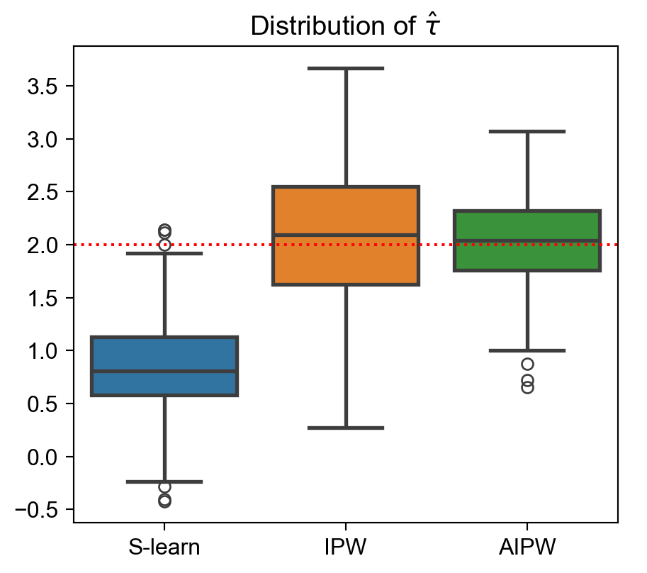

| coef | std err | |
|---|---|---|
| Intercept | 19.1748 | 0.402 |
| dark_mode[T.True] | -0.4446 | 0.571 |
<Figure size 96x96 with 0 Axes>DSAN 5650: Causal Inference for Computational Social Science
Summer 2025, Georgetown University
Today’s Planned Schedule:
| Start | End | Topic | |
|---|---|---|---|
| Lecture | 6:30pm | 6:45pm | Final Project Tings → |
| 6:45pm | 7:20pm | Double Robustness → | |
| 7:20pm | 8:00pm | When Conditioning Won’t Cut It: IVs → | |
| Break! | 8:00pm | 8:10pm | |
| 8:10pm | 9:00pm | Drawing Causal Inferences from Text Data → |
\[ \DeclareMathOperator*{\argmax}{argmax} \DeclareMathOperator*{\argmin}{argmin} \newcommand{\bigexp}[1]{\exp\mkern-4mu\left[ #1 \right]} \newcommand{\bigexpect}[1]{\mathbb{E}\mkern-4mu \left[ #1 \right]} \newcommand{\definedas}{\overset{\small\text{def}}{=}} \newcommand{\definedalign}{\overset{\phantom{\text{defn}}}{=}} \newcommand{\eqeventual}{\overset{\text{eventually}}{=}} \newcommand{\Err}{\text{Err}} \newcommand{\expect}[1]{\mathbb{E}[#1]} \newcommand{\expectsq}[1]{\mathbb{E}^2[#1]} \newcommand{\fw}[1]{\texttt{#1}} \newcommand{\given}{\mid} \newcommand{\green}[1]{\color{green}{#1}} \newcommand{\heads}{\outcome{heads}} \newcommand{\iid}{\overset{\text{\small{iid}}}{\sim}} \newcommand{\lik}{\mathcal{L}} \newcommand{\loglik}{\ell} \DeclareMathOperator*{\maximize}{maximize} \DeclareMathOperator*{\minimize}{minimize} \newcommand{\mle}{\textsf{ML}} \newcommand{\nimplies}{\;\not\!\!\!\!\implies} \newcommand{\orange}[1]{\color{orange}{#1}} \newcommand{\outcome}[1]{\textsf{#1}} \newcommand{\param}[1]{{\color{purple} #1}} \newcommand{\pgsamplespace}{\{\green{1},\green{2},\green{3},\purp{4},\purp{5},\purp{6}\}} \newcommand{\pedge}[2]{\require{enclose}\enclose{circle}{~{#1}~} \rightarrow \; \enclose{circle}{\kern.01em {#2}~\kern.01em}} \newcommand{\pnode}[1]{\require{enclose}\enclose{circle}{\kern.1em {#1} \kern.1em}} \newcommand{\ponode}[1]{\require{enclose}\enclose{box}[background=lightgray]{{#1}}} \newcommand{\pnodesp}[1]{\require{enclose}\enclose{circle}{~{#1}~}} \newcommand{\purp}[1]{\color{purple}{#1}} \newcommand{\sign}{\text{Sign}} \newcommand{\spacecap}{\; \cap \;} \newcommand{\spacewedge}{\; \wedge \;} \newcommand{\tails}{\outcome{tails}} \newcommand{\Var}[1]{\text{Var}[#1]} \newcommand{\bigVar}[1]{\text{Var}\mkern-4mu \left[ #1 \right]} \]
import pandas as pd
import numpy as np
import matplotlib.pyplot as plt
import seaborn as sns
import patchworklib as pw;
import statsmodels.formula.api as smf
from causalml.match import create_table_one
from joblib import Parallel, delayed
from sklearn.linear_model import LogisticRegression
def generate_data(N=300, seed=1):
np.random.seed(seed)
# Control variables
male = np.random.binomial(1, 0.45, N)
age = np.rint(18 + np.random.beta(2, 2, N)*50)
hours = np.minimum(np.round(np.random.lognormal(5, 1.3, N), 1), 2000)
# Treatment
pr = np.maximum(0, np.minimum(1, 0.8 + 0.3*male - np.sqrt(age-18)/10))
dark_mode = np.random.binomial(1, pr, N)==1
# Outcome
read_time = np.round(np.random.normal(10 - 4*male + 2*np.log(hours) + 2*dark_mode, 4, N), 1)
# Generate the dataframe
df = pd.DataFrame({'read_time': read_time, 'dark_mode': dark_mode, 'male': male, 'age': age, 'hours': hours})
return df
user_df = generate_data(N=300)
ols_model = smf.ols("read_time ~ dark_mode", data=user_df).fit()
ols_summary = ols_model.summary()
results_as_html = ols_summary.tables[1].as_html()
ols_summary_df = pd.read_html(results_as_html, header=0, index_col=0)[0]
ols_summary_df[['coef','std err']]
#type(ols_summary.tables[1])[['coef','std err']]
# .tables[1]
# ols_df[['coef','std err']]
| coef | std err | |
|---|---|---|
| Intercept | 19.1748 | 0.402 |
| dark_mode[T.True] | -0.4446 | 0.571 |
<Figure size 96x96 with 0 Axes>(…since I couldn’t figure out how to fit it on the last slide)
user_df.head()| read_time | dark_mode | male | age | hours | |
|---|---|---|---|---|---|
| 0 | 14.4 | False | 0 | 43.0 | 65.6 |
| 1 | 15.4 | False | 1 | 55.0 | 125.4 |
| 2 | 20.9 | True | 0 | 23.0 | 642.6 |
| 3 | 20.0 | False | 0 | 41.0 | 129.1 |
| 4 | 21.5 | True | 0 | 29.0 | 190.2 |
#ax = pw.Brick(figsize=(8,5))
sns.pairplot(
data=user_df, aspect=0.8
)
Enter Uber’s causal inference library: causalml
from IPython.display import display, HTML
X = ['male', 'age', 'hours']
table1 = create_table_one(user_df, 'dark_mode', X)
user_df.to_csv("assets/user_df.csv")
table1.to_csv("assets/table1.csv")
HTML(table1.to_html())| Control | Treatment | SMD | |
|---|---|---|---|
| Variable | |||
| n | 151 | 149 | |
| age | 46.01 (9.79) | 39.09 (11.53) | -0.6469 |
| hours | 337.78 (464.00) | 328.57 (442.12) | -0.0203 |
| male | 0.34 (0.47) | 0.66 (0.48) | 0.6732 |
And then WeightIt to generate a “love plot”:
\[ \begin{align*} \hat \tau_{AIPW} &= \frac{1}{n} \sum_{i=1}^{n} \left( \text{RegEst}(X_i) + \text{PropensityAdj}(X_i, Y_i) \right) \\ \text{RegEst}(X_i) &= \hat \mu^{(1)}(X_i) - \hat \mu^{(0)}(X_i) \\ \text{PropensityAdj}(X_i, Y_i) &= \frac{D_i}{\hat{\mathtt{e}}(X_i)} \left( Y_i - \hat \mu^{(1)}(X_i) \right) - \frac{(1-D_i) }{1-\hat{\mathtt{e}}(X_i)} \left( Y_i - \hat \mu^{(0)}(X_i) \right) \end{align*} \]
where \(\mu^{(d)}(x)\) is the response function, i.e. the expected value of the outcome, conditional on observable characteristics \(x\) and treatment status \(d\), and \(e(X)\) is the propensity score.
\[ \begin{align*} \mu^{(d)}(x) &= \mathbb E \left[ Y_i \ \big | \ X_i = x, D_i = d \right] \\ \mathtt{e}(x) &= \mathbb E \left[ D_i = 1 \ \big | \ X_i = x \right] \end{align*} \]
def estimate_e(df, X, D, model_e):
e = model_e.fit(df[X], df[D]).predict_proba(df[X])[:,1]
return e
user_df['e'] = estimate_e(user_df, X, "dark_mode", LogisticRegression())
ax = pw.Brick(figsize=(7, 2.75));
sns.kdeplot(
x='e', hue='dark_mode', data=user_df,
# bins=30,
#stat='density',
common_norm=False,
fill=True,
ax=ax
);
ax.set_xlabel("$e(X)$");
ax.savefig()
w = 1 / (user_df['e'] * user_df["dark_mode"] + (1-user_df['e']) * (1-user_df["dark_mode"]))
smf.wls("read_time ~ dark_mode", weights=w, data=user_df).fit().summary().tables[1]| coef | std err | t | P>|t| | [0.025 | 0.975] | |
| Intercept | 18.5871 | 0.412 | 45.158 | 0.000 | 17.777 | 19.397 |
| dark_mode[T.True] | 1.0486 | 0.581 | 1.805 | 0.072 | -0.095 | 2.192 |
scikit-learn:def estimate_mu(df, X, D, y, model_mu):
mu = model_mu.fit(df[X + [D]], df[y])
mu0 = mu.predict(df[X + [D]].assign(dark_mode=0))
mu1 = mu.predict(df[X + [D]].assign(dark_mode=1))
return mu0, mu1
from sklearn.linear_model import LinearRegression
mu0, mu1 = estimate_mu(user_df, X, "dark_mode", "read_time", LinearRegression())
print(np.mean(mu0), np.mean(mu1))
print(np.mean(mu1-mu0))18.265714409803312 19.651524322951012
1.3858099131476969EconML, Microsoft’s “Official” ML-based econometrics library 😎from econml.dr import LinearDRLearner
model = LinearDRLearner(
model_propensity=LogisticRegression(),
model_regression=LinearRegression(),
random_state=5650
)
model.fit(Y=user_df["read_time"], T=user_df["dark_mode"], X=user_df[X]);
model.ate_inference(X=user_df[X].values, T0=0, T1=1).summary().tables[0]| mean_point | stderr_mean | zstat | pvalue | ci_mean_lower | ci_mean_upper |
| 1.321 | 0.549 | 2.409 | 0.016 | 0.246 | 2.396 |
Wrong regression model:
def compare_estimators(X_e, X_mu, D, y, seed):
df = generate_data(seed=seed)
e = estimate_e(df, X_e, D, LogisticRegression())
mu0, mu1 = estimate_mu(df, X_mu, D, y, LinearRegression())
slearn = mu1 - mu0
ipw = (df[D] / e - (1-df[D]) / (1-e)) * df[y]
aipw = slearn + df[D] / e * (df[y] - mu1) - (1-df[D]) / (1-e) * (df[y] - mu0)
return np.mean((slearn, ipw, aipw), axis=1)
def simulate_estimators(X_e, X_mu, D, y):
r = Parallel(n_jobs=8)(delayed(compare_estimators)(X_e, X_mu, D, y, i) for i in range(100))
df_tau = pd.DataFrame(r, columns=['S-learn', 'IPW', 'AIPW'])
return df_tau
# The actual plots
ax = pw.Brick(figsize=(4, 3.5))
wrong_reg_df = simulate_estimators(
X_e=['male', 'age'], X_mu=['hours'], D="dark_mode", y="read_time"
)
wrong_reg_plot = sns.boxplot(
data=pd.melt(wrong_reg_df), x='variable', y='value', hue='variable',
ax=ax,
linewidth=2
);
wrong_reg_plot.set(
title="Distribution of $\hat τ$", xlabel='', ylabel=''
);
ax.axhline(2, c='r', ls=':');
ax.savefig()
Wrong propensity score model:
ax = pw.Brick(figsize=(4, 3.5))
wrong_ps_df = simulate_estimators(
['age'], ['male', 'hours'], D="dark_mode", y="read_time"
)
wrong_ps_plot = sns.boxplot(
data=pd.melt(wrong_ps_df), x='variable', y='value', hue='variable',
ax=ax,
linewidth=2
);
ax.set_title("Distribution of $\hat τ$");
ax.axhline(2, c='r', ls=':');
ax.savefig()I… always ask economists why it isn’t explained like this, and they always say “it’s more complicated than that”, and then they explain the complications and I think I understand them but still think that this is a good way to describe the gist!